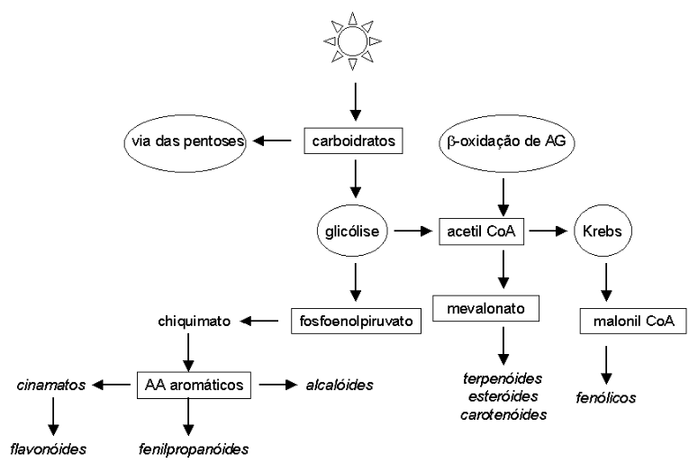

Metabolismo Vegetal Secundário
Introdução
O metabolismo vegetal secundário compreende rotas derivadas do metabolismo de aminoácidos e do ciclo do ácido cítrico, capazes de originar diversas substância de defesa, proteção, crescimento e desenvolvimento vegetais. Não obstante, estas substâncias são bastante empregadas na farmacologia e medicina atuais, além de constituir as fragâncias e sabores de diversas hortaliças conhecidas.
Assim, o aroma do cravo-da-índia, o sabor do brócoli, o xarope de codeína, o alucinógeno peiote, os flavonóides, atualmente aclamados redutores de colesterol, fazem parte deste vasto grupo de biomoléculas produzidas essencialmente por plantas e alguns microrganismos.
Por definição, o metabolismo secundário não objetiva à produção ou conservação de energia, assunto já tratado nesta obra como metabolismo principal e intermediário das células.
Detalhes
Metabolismo vegetal secundário é um termo que se refere à produção de biomoléculas pelas plantas em estágios distintos de crescimento, desenvolvimento, períodos de estresse, ataque microbiológico, ou por limitações nutricionais. Todo o metabolismo vegetal secundário é tem como precursor a glicose, a partir da qual é possível a conversão indireta em diversas classes, tais como alcalóides, taninos, lignanas, cumarinas, antraquinonas, flavonóides, terpenóides, esteróis e acetogeninas.
Existem duas vias de produção de metabólitos secundários nos vegetais, uma pelo ácido chiquímico, o qual origina os aminoácidos aromáticos, precursores da maioria dos metabólitos secundários aromáticos, e outra pelo acetato.
A combinação de derivados chiquímicos com acetatos também origina uma via para a produção de antraquinonas, flavonóides e taninos condensados. Os derivados do acetato são formados pela via do ciclo de Krebs, do mevalonato, e do acetato, propriamente dito.

O ácido chiquímico é formado pela condensação aldólica de dois metabólitos da glicose, o fosfoenolpiruvato (da glicólise / gliconeogênese) e a eritrose-4-fosfato (da via das pentoses). A partir desta, o chiquimato (pH acídico vegetal) pode originar o corismato (chiquimato + fosfoenolpiruvato) e o galato. O corismato origina os aminoácidos aromáticos, precursores da grande maioria dos alcalóides, e cuja rota biossintética não está presente nos animais.
Derivados importantes do triptofano, os alcalóides indólicos vincristina e vimblastina, extraídos de Catharanthus roseus G. Don, são empregados no tratamento da leucemia e de uma variedade de neoplasias. Já a efedrina, derivada biossintética da fenilalanina, constitui um potente alcalóide opiáceo.
A tirosina, por sua vez, origina diversos aminoalcalóides, dos quais o peiote, extraído da Lophophora williamsii (Lem.) Coulter, é considerado exemplo curioso. O peiote é extraído de um cactus que cresce ao sul dos Estados Unidos e norte do México, e empregado pelas populações indígenas em cerimônias religiosas. Sua ação alucinógena se deve principalmente ao protoalcalóide mescalina.
Morfina e codeína, alcalóides benzilisoquinolínicos derivados da tirosina, possuem importância farmacológica por ser utilizados no tratamento de câncer e de doenças crônicas terminais.
Derivados secundários da fenilalanina, como o ácido cinâmico, podem dar origem a substâncias aromáticas como o eugenol, presente no cravo-da-índia, e o anetol, principal óleo volátil da erva-doce e do funcho.
Outras substâncias do metabolismo vegetal secundário derivadas de aminoácidos aromáticos, mas sem constituir alcalóides, são os lignóides e as cumarinas, ambas derivados do ácido cinâmico.
Além destes, produtos derivados do ácido chiquímico e do acetato são as antraquinonas, os flavonóides (pigmentos vegetais de ampla distribuição na natureza, estando relacionados com proteção contra raios ultravioleta e ação antimicrobiana), e os taninos condensados.
A partir do acetato, na forma de acetil CoA, que entra no ciclo de Krebs, é possível a síntese de precursores de alcalóides e glicosídeos cianogênicos, tais como os aminoácidos alifáticos ornitina, lisina, aspartato e glutamina. Nos dois primeiros grupos encontram-se os alcalóides tropânicos (escopolamina), os alcalóides do senécio, e os alcalóides piridínicos e piperidínicos.
Glicosídeos cianogênicos e os glicosinolatos são compostos nitrogenados encontrados nos vegetais com função de defesa e proteção destes. Neste sentido não são tóxicos por definição, mas podem hidrolisar-se facilmente liberando substâncias voláteis altamente tóxicas, o que pode acontecer a partir da ingesta dos exemplares. Estes glicosídeos são capazes de liberar HCN, ácido cianídrico, o qual interage na cadeia respiratória das células animais, inibindo sua atividade.
Os glicosinolatos, por sua vez, originam compostos responsáveis pelo aroma e gosto de vetetais como o repolho e o brócoli, ambos ricos em aminoácidos sulfurados precursores daqueles.
Outros derivados do acetato constituem os produtos do mevalonato (derivados do isopreno, como óleos voláteis - mono e sesquiterpenos, saponinas e heterosídios cardiotônicos) e da condensação de acetil CoA (ácidos graxos e acetogeninas). Por fim, paralelos aos derivados do acetato estão os heterosídeos (unidades ligadas de açúcares derivados), como a farmacológica aglicona, e os polissacarídeos (condensação de várias moléculas de açúcar).
